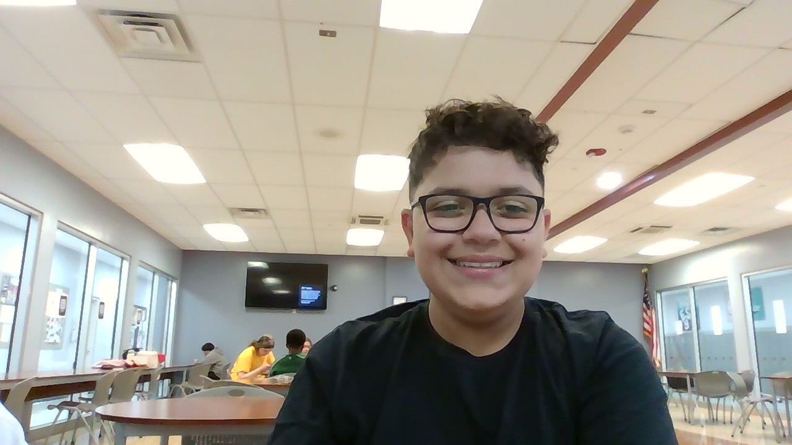

About ME!
My Background
I'm a freshman at Bergen County Techincal Schools in Teterboro, enrolled in the Computer Science program. I chose this program because ever since I was a little kid, I have always had an interest for coding. I went to many MakerSpace camps over the summer, as I wanted to get a deeper understanding about coding. I love coding and creating things that others can use in their daily life.
Outside of school, I like to play Video Games, like Roblox, and play a lot of soccer. I also like to 3D print a lot of things using my computer. I'm excited to develop my skills throughout high school and pursue a career in technology.
Technical Skills
- Currently Learning: HTML5, CSS3, JavaScript, Bootstrap, JS DOM
- Tools: VS Code, Git, GitHub, Chrome DevTools
- Future Courses: python and Intro to Machine Learning and AI-10th grade, Advanced Programming (Backend Frameworks) and Game Development- 11th grade
- CS Capstone Project: Senior year and Intro to Computing(Java)-12th grade